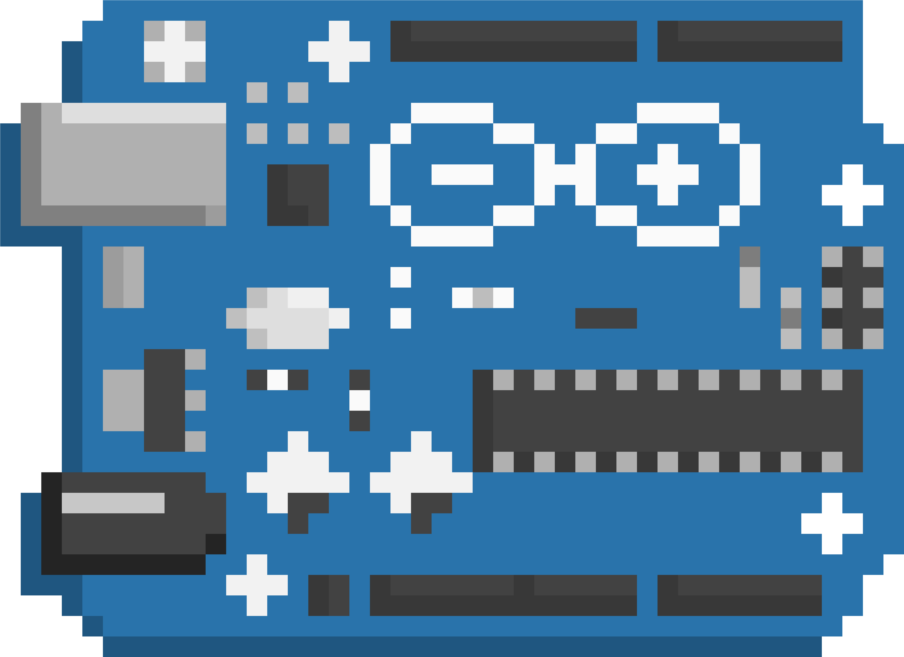
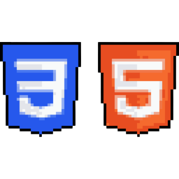
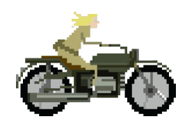

Arduino Projelerim
Arduino Nedir? Arduino, açık kaynak kodlu yazılım ve donanıma sahip bir mikrodenetleyici platformudur. Arduino ile sensörlerden gelen verileri okuyabilir ve bu girdilere göre elektronik cihazları kontrol edebilir, örneğin LED'leri yakıp söndürebilir ya da motoru çalıştırabiliriz.
YAPYEE
Yap-ye bir mobil uygulama projesi ve benim ilk projem aynı zamanda bir ekip projesidir. Bu projeyi yaparken dart ve flutterı daha iyi kullanmayı ve ekiple nasıl çalışılacağını öğrendim. Uygulamanın amacı kısaca insanlara yemek tarifleri önermek ve alışveriş listeleri yapmalarına yardımcı olmaktır.

WEB Projelerim
Bu site web yeteneklerimin ilk örneğidir.
SOLVIO ERP
SOLVIO bizim ekibimize verdiğimiz isimdir ve ekipce gelişmiş bir projeye imza atmaktan gurur duyuyoruz. Solvio ERP kurumların kaynak yönetimini, depo takibini ve sipariş hizmetlerini kolaylaştıran masaüstü-mobil ile beraber geliştirdiğimiz ve sürekli yeni özellikler eklediğimiz uygulamamızdır.
